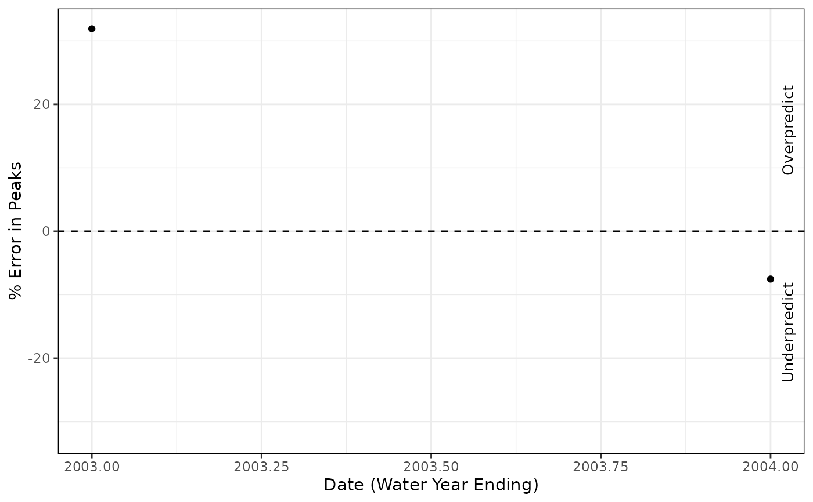
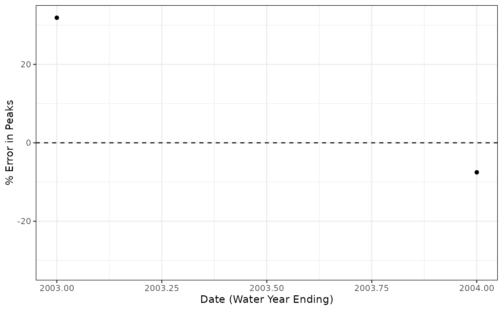

rvn_annual_peak_error creates a plot of the annual observed and simulated peak percent errors, based on the water year.
rvn_annual_peak_error(
sim,
obs,
mm = 9,
dd = 30,
add_line = TRUE,
add_labels = TRUE
)time series object of simulated flows
time series object of observed flows
month of water year (default 9)
day of water year (default 30)
optionally adds a 1:1 line to the plot for reference
(default TRUE)
optionally adds labels for overpredict/underpredict on
right side axis (default TRUE)
returns a list with peak errors in a data frame, and a ggplot object
data frame of the calculated peak errors
ggplot object with plotted annual peak errors
Creates a plot of the percent errors in simulated peaks for each water year. The peaks are calculated as the magnitude of the largest event in each water year. Note that the rvn_annual_peak_error function is first used to obtain the peaks in each year, then the percent errors are calculated.
The percent errors are calculated as (QPsim-QPobs)/QPobs*100, where QP is the peak flow event.
The sim and obs should be of time series (xts) format and are assumed to be of the same length and time period. The flow series are assumed to be daily flows with units of m3/s.
The add_labels will add the labels of 'overprediction' and 'underprediction' to the right hand side axis if set to TRUE. This is useful in interpreting the plots.
Note that a plot title is purposely omitted in order to allow the automatic generation of plot titles.
rvn_annual_peak_event to consider the timing of peak
events rvn_annual_peak_event_error to calculate errors in peak
events.
system.file("extdata","run1_Hydrographs.csv", package="RavenR") %>%
rvn_hyd_read(.) %>%
rvn_hyd_extract(subs="Sub36",.) ->
hyd_data
sim <- hyd_data$sim
obs <- hyd_data$obs
# create a plot of annual peak errors with default options
peak1 <- rvn_annual_peak_error(sim, obs)
peak1$df_peak_error
#> date.end errors
#> 1 2003-09-30 31.89879
#> 2 2004-09-30 -7.52619
peak1$p1

# plot directly and without labels
rvn_annual_peak_error(sim, obs, add_line=TRUE, add_labels=FALSE)
#> $df_peak_error
#> date.end errors
#> 1 2003-09-30 31.89879
#> 2 2004-09-30 -7.52619
#>
#> $p1

#>